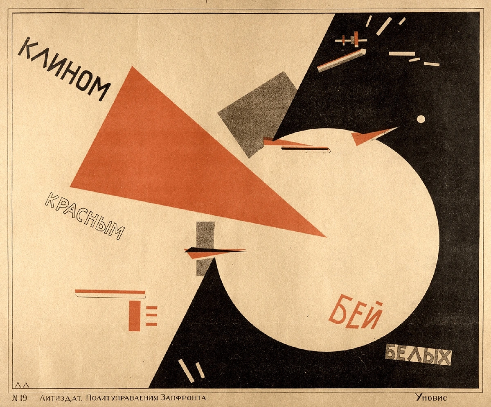
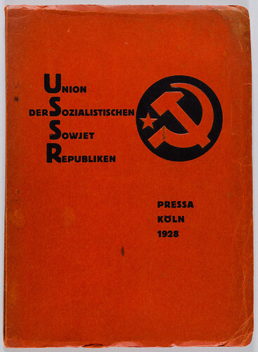
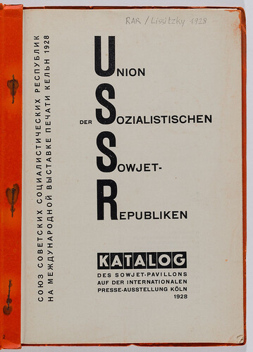
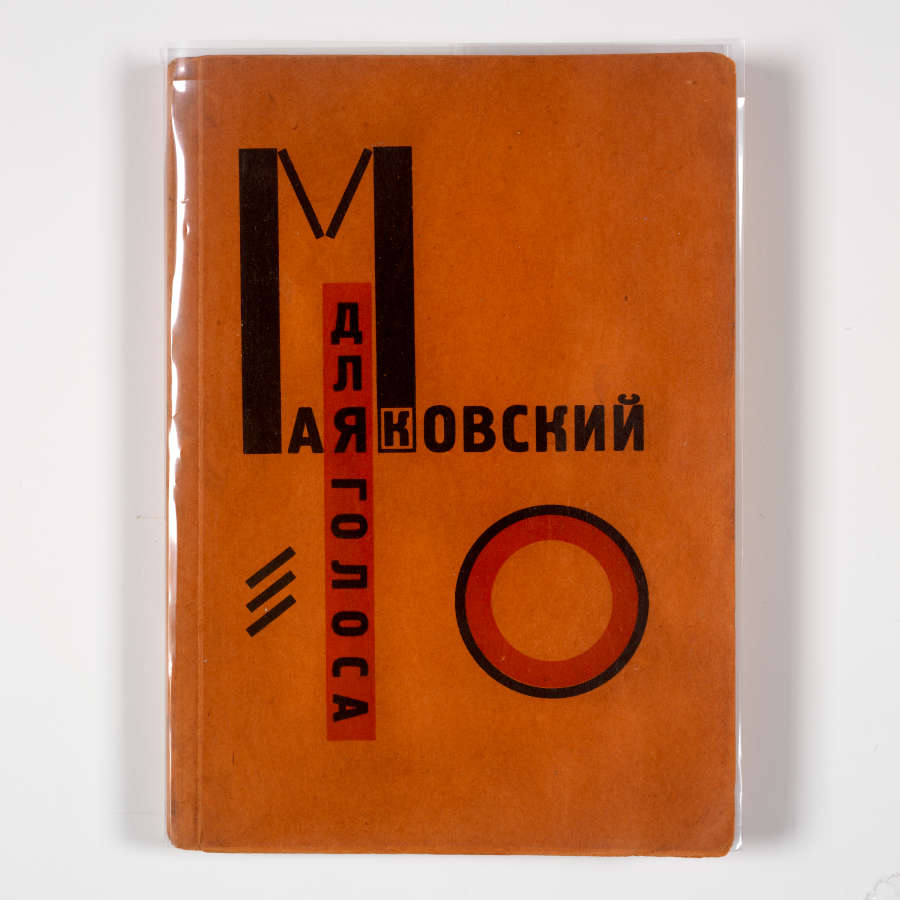
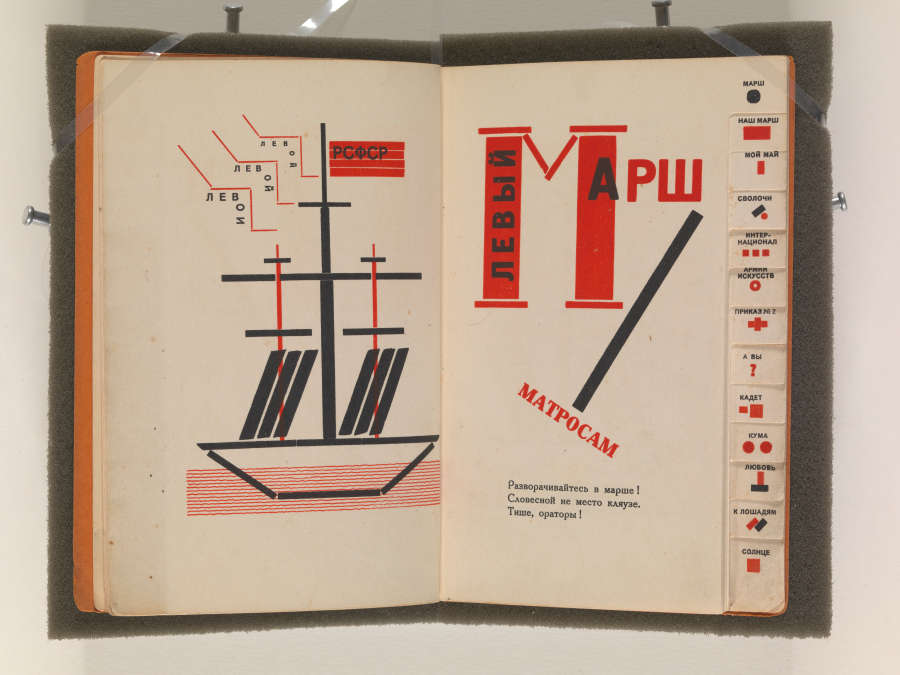
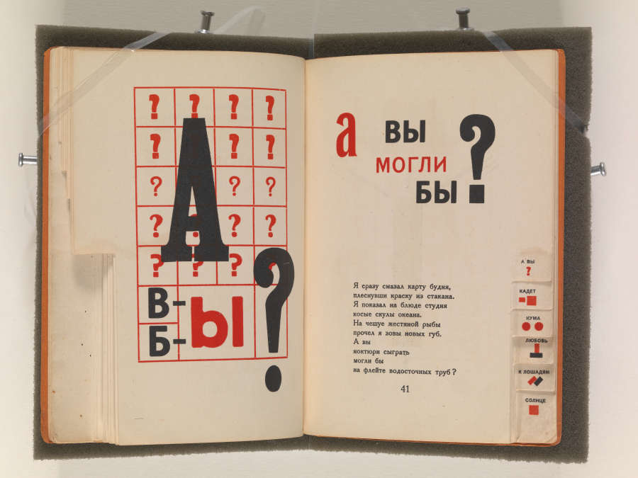

幾何学を、対立の記号にする。
赤い楔と白い円の関係が画面を支配します。赤軍と白軍の対立を伝える当時の政治広告として読むもので、現代の行動を呼びかける図ではありません。
本文公開・実作品画像5点／画像の収録は継続中
歴史的な運動
Russian Constructivism
人の写真に文字を組み合わせて、本をすすめる広告をつくる。
みんなで読むために、机や部屋の使い方を考える。
ロシアでは、絵や形をつくる仕事を、こうした毎日の道具や場所へつなげる動きがありました。
形を考えるだけでなく、どうつくり、どう使うかも大切な問題でした。
RELATED WORK / 関連する実作品（代表作品とは別）

画像を表示できませんでした。下の所蔵元リンクから作品を確認できます。
EL LISSITZKY / RELATED HISTORICAL WORK · 1919年または1920年（資料により異なる）
El Lissitzky / スキャンされた所蔵個体は不明／配布元：Wikimedia Commons
シュプレマティスムの幾何学を政治的伝達へ展開した関連作。所蔵個体・スキャン作成者は不明です。構成主義の代表作品画像とは別の参照枠に置きます。
赤い楔と白い円の関係が画面を支配します。赤軍と白軍の対立を伝える当時の政治広告として読むもので、現代の行動を呼びかける図ではありません。
文字列、赤い三角形、黒い斜面の向きが画面の動きを作ります。限定した色と大きさの差が、読む順序に関わっています。
シュプレマティスムの幾何学的語彙を社会的伝達へ使った関連作品です。構成主義そのものの確定分類や、純粋な代表作3点セットとして数えません。
形と文字の関係は掲載複製の観察です。年代は宇都宮美術館提供データの1919年とMFA Boston/Tateの1920年で異なり、2年間の制作期間を意味しません。これらの館の所蔵番号・寸法をこのスキャンへ転記しません。
El Lissitzky, Beat the Whites with the Red Wedge, 1919 or 1920. Digital reproduction via Wikimedia Commons (source recorded as losko.ru), Public Domain Mark 1.0. Scan creator and physical copy unknown.
Commonsの個別ファイル・出典記録 ↗原作品：CommonsのPD表示。配布ファイル：当該PDM 1.0表示。CC0ではありません。確認日 2026-11-01。
今回取得したPNGは取得後無加工で保持。過去の調整履歴は不明（ファイルにはPhotoshopメタデータあり）。表示用は全構図・縦横比を保って縮小しWebPへ再符号化。美術館提供画像とは表示しません。
Public Domain Markの説明 / PDM 1.0（CC0ではない） / 収録画像の権利台帳
PDMは公有状態を示す標識で、権利者の許諾や全法域の保証ではない。
作品同定・年代・文脈の資料（このスキャンの所蔵先ではありません）：宇都宮美術館提供データ · MFA Boston · Tate
実作品を見る

画像を表示できませんでした。下の出典ページで確認できます。
エル・リシツキー（デザイン）／ソ連館委員会／M・デュモン・シャウベルク（印刷） / デザイン：1927–1928年／刊行：1928年
同じ図録の表紙と扉です。この所蔵本には折り込み写真モンタージュがなく、ここにも写っていません。
表紙と扉を比べると、文字の大きさや置き方が変わっています。赤と黒、余白の使い方を見てみましょう。
エル・リシツキー（デザイン）／ソ連館委員会／M・デュモン・シャウベルク（印刷）《国際新聞博覧会「プレスサ」ソ連館の図録》、デザイン：1927–1928年／刊行：1928年。ハンブルク美術工芸博物館、BZV1999.63。Public Domain Mark 1.0。
出典で作品・資料を見る ↗Public Domain Mark 1.0
所蔵館は原作品をパブリックドメインとして公開しています。
所蔵館が、この画像をPublic Domain Mark 1.0で公開しています。
配信された原画像を無加工で保持しています。
所蔵館による個別の指定に基づきます。すべての国での権利保証や、所蔵館の推奨を意味しません。
出典先の原画像を開く ↗画像の利用条件 ↗実作品を見る

画像を表示できませんでした。下の出典ページで確認できます。
エル・リシツキー（デザイン）／ソ連館委員会／M・デュモン・シャウベルク（印刷） / デザイン：1927–1928年／刊行：1928年
同じ図録の表紙と扉です。この所蔵本には折り込み写真モンタージュがなく、ここにも写っていません。
表紙と扉を比べると、文字の大きさや置き方が変わっています。赤と黒、余白の使い方を見てみましょう。
エル・リシツキー（デザイン）／ソ連館委員会／M・デュモン・シャウベルク（印刷）《国際新聞博覧会「プレスサ」ソ連館の図録》、デザイン：1927–1928年／刊行：1928年。ハンブルク美術工芸博物館、BZV1999.63。Public Domain Mark 1.0。
出典で作品・資料を見る ↗Public Domain Mark 1.0
所蔵館は原作品をパブリックドメインとして公開しています。
所蔵館が、この画像をPublic Domain Mark 1.0で公開しています。
配信された原画像を無加工で保持しています。
所蔵館による個別の指定に基づきます。すべての国での権利保証や、所蔵館の推奨を意味しません。
出典先の原画像を開く ↗画像の利用条件 ↗実作品を見る

画像を表示できませんでした。下の出典ページで確認できます。
エル・リシツキー（デザイン）／ウラジーミル・マヤコフスキー（詩）／ロシア社会主義連邦ソビエト共和国国立出版所（印刷） / 1923年
同じ詩集の表紙と二つの見開きです。3作品ではなく、1冊の異なる部分として見比べます。
文字や線、丸い形が、読むための記号であると同時に、絵のようにも働いています。ページの右端には、詩を探すための目印があります。
エル・リシツキー（デザイン）／ウラジーミル・マヤコフスキー（詩）／ロシア社会主義連邦ソビエト共和国国立出版所（印刷）《声のために》、1923年。ロードアイランド・スクール・オブ・デザイン美術館（RISD美術館）、RISD2006.92.1。CC0 1.0 Universal。 Mary B. Jackson Fund, 2006.92.1.
出典で作品・資料を見る ↗CC0 1.0 Universal
所蔵館は原作品をパブリックドメインとして公開しています。
所蔵館が、この画像をCC0 1.0 Universalで公開しています。
この画像はRISD美術館の所蔵番号2006.92.1の画像です。他館の同じ書名の所蔵本や、その画像に付された別の権利表示には適用されません。
配信された原画像を無加工で保持しています。
所蔵館による個別の指定に基づきます。すべての国での権利保証や、所蔵館の推奨を意味しません。
出典先の原画像を開く ↗画像の利用条件 ↗実作品を見る

画像を表示できませんでした。下の出典ページで確認できます。
エル・リシツキー（デザイン）／ウラジーミル・マヤコフスキー（詩）／ロシア社会主義連邦ソビエト共和国国立出版所（印刷） / 1923年
同じ詩集の表紙と二つの見開きです。3作品ではなく、1冊の異なる部分として見比べます。
文字や線、丸い形が、読むための記号であると同時に、絵のようにも働いています。ページの右端には、詩を探すための目印があります。
エル・リシツキー（デザイン）／ウラジーミル・マヤコフスキー（詩）／ロシア社会主義連邦ソビエト共和国国立出版所（印刷）《声のために》、1923年。ロードアイランド・スクール・オブ・デザイン美術館（RISD美術館）、RISD2006.92.1。CC0 1.0 Universal。 Mary B. Jackson Fund, 2006.92.1.
出典で作品・資料を見る ↗CC0 1.0 Universal
所蔵館は原作品をパブリックドメインとして公開しています。
所蔵館が、この画像をCC0 1.0 Universalで公開しています。
この画像はRISD美術館の所蔵番号2006.92.1の画像です。他館の同じ書名の所蔵本や、その画像に付された別の権利表示には適用されません。
配信された原画像を無加工で保持しています。
所蔵館による個別の指定に基づきます。すべての国での権利保証や、所蔵館の推奨を意味しません。
出典先の原画像を開く ↗画像の利用条件 ↗実作品を見る

画像を表示できませんでした。下の出典ページで確認できます。
エル・リシツキー（デザイン）／ウラジーミル・マヤコフスキー（詩）／ロシア社会主義連邦ソビエト共和国国立出版所（印刷） / 1923年
同じ詩集の表紙と二つの見開きです。3作品ではなく、1冊の異なる部分として見比べます。
文字や線、丸い形が、読むための記号であると同時に、絵のようにも働いています。ページの右端には、詩を探すための目印があります。
エル・リシツキー（デザイン）／ウラジーミル・マヤコフスキー（詩）／ロシア社会主義連邦ソビエト共和国国立出版所（印刷）《声のために》、1923年。ロードアイランド・スクール・オブ・デザイン美術館（RISD美術館）、RISD2006.92.1。CC0 1.0 Universal。 Mary B. Jackson Fund, 2006.92.1.
出典で作品・資料を見る ↗CC0 1.0 Universal
所蔵館は原作品をパブリックドメインとして公開しています。
所蔵館が、この画像をCC0 1.0 Universalで公開しています。
この画像はRISD美術館の所蔵番号2006.92.1の画像です。他館の同じ書名の所蔵本や、その画像に付された別の権利表示には適用されません。
配信された原画像を無加工で保持しています。
所蔵館による個別の指定に基づきます。すべての国での権利保証や、所蔵館の推奨を意味しません。
出典先の原画像を開く ↗画像の利用条件 ↗作品の知名度や画像の入手しやすさだけで選びません。紹介したい作品と、調べて分かったことをまとめました。画像を載せられるかどうかは、別に確かめています。画像の利用許諾を確認できていないものは掲載していません。
出版広告、共同で使う家具や空間、建てられなかった計画を伝える記録、布のための紙の図案という、4つの役割から選びました。紙の図案の模様を実際に使った布は、まだ特定できていません。製品や舞台など、すべての分野を代表する組み合わせは未完成です。1967年の広告の複製、1998年の室内の再構成、1979年の塔の模型は、1920年代当時のものとは区別します。
原題：Monument to the Third International（未建設計画／1920年刊行資料）
塔をつくるための案を伝えた、本の資料です。
材料や支え方だけでなく、社会の仕組みとつなげて考えられました。
塔そのものや、当時の模型が残っているという意味ではありません。
未建設の建築構想・模型・出版記録
建物を支える構造、材料、社会の仕組みを変える計画が、どう結びついたかを見ます。MoMAの教材は、実現しなかった塔と、その考えを伝える本の印刷図版を分けて扱っています。
MoMA 215.2001.1-2はIzo NKPが刊行した本で、今残っている塔の模型ではありません。2012–13年の展覧会に出た木と金属の模型は、Pompidou所蔵の1979年の再構成です。つくり直した人は確認中です。最初の案、印刷された記録、後の再構成、今撮った写真を、それぞれ分けて記録します。
原題：Books (Please)! In All Branches of Knowledge（Lengiz広告）
本をすすめるための広告です。
もとになった人物写真に、文字や見せ方の工夫を加えています。
写真だけのときと、広告になったときを比べるための例です。
出版広告・肖像写真と文字
TEAは、もとになったリリア・ブリーク（Lilia Brik）の肖像写真と、Gosizdatのレニングラード部門の広告を別の資料として記録しています。写真が、本を読むよう呼びかける広告へ変わる例です。人物写真そのものと、文字や配置を加えた広告を比べる候補として選びました。
Frye 2015.010S.30は1967年の複製です。1924年当時に刷ったものではありません。もとの肖像写真、当時の広告案、後の印刷物、今撮った作品写真を分けて記録します。所蔵記録の1924年を、紙そのものの製造年には使いません。
原題：Workers’ Club, 1925 Paris exposition design
みんなで学び、話し合う場所のための家具や部屋の案です。
机には、作業する平らな面と、本を読むために傾けられる面があります。
チェス盤や、人前で話すための台も組み合わせました。
展示空間・多機能家具
共同で使う机の面は、作業用の水平な面から、読書用の斜めの面へ変えられます。チェス盤や、人前で話すための演壇、掲示するための装置も組み合わせます。図形を眺めるだけでなく、読書、交流、政治教育のために人の行動をどう導くかを考える候補です。
MoMAが1998年の展覧会で示したものは、もとの姿に近づけた再構成です。1925年当時の展示、設計図、後のつくり直し、その写真は同じものとして扱いません。使う画像について、再制作した人、撮影した人、利用の許可は未確認です。
原題：Textile design（紙の図案、34.9 × 28.2 cm）
布のための模様を、紙に描いたものです。
形をくり返した模様が、実際の布になるとどう見えるかを考えます。
この紙があるだけでは、同じ模様の布がつくられたとはいえません。
テキスタイル図案・生産への提案
抽象的な形を繰り返す模様にして、日常の布へ移していく設計を見ます。ポポーワ（Popova）とステパノーワ（Stepanova）が工場で取り組んだ仕事が背景にあります。紙に描いた案は、製造できる布や、着たときの形とどうつながるでしょう。
MoMAの2010年の出品リストに載る、Costakis Collectionの作品です。紙にガッシュ（不透明な水彩絵の具）、インク、鉛筆を使っています。製造された布ではありません。同じリストの23.6 × 14.3 cmの図案とは別です。この模様を実際に印刷した布、その製造者、製造年はまだ特定できていません。その情報までわかったものとしては扱いません。
図録・ブックデザイン
表紙と扉を比べると、文字の大きさや置き方が変わっています。赤と黒、余白の使い方を見てみましょう。
作品・資料の出典を見る ↗原題：Katalog des Sowjet-Pavillons auf der Internationalen Presse-Ausstellung Köln 1928
エル・リシツキー（デザイン）／ソ連館委員会／M・デュモン・シャウベルク（印刷） / デザイン：1927–1928年／刊行：1928年 / 図録・ブックデザイン
同じ図録の表紙と扉です。この所蔵本には折り込み写真モンタージュがなく、ここにも写っていません。
詩集・ブックデザイン
文字や線、丸い形が、読むための記号であると同時に、絵のようにも働いています。ページの右端には、詩を探すための目印があります。
作品・資料の出典を見る ↗原題：Dlia golosa (For the Voice)
エル・リシツキー（デザイン）／ウラジーミル・マヤコフスキー（詩）／ロシア社会主義連邦ソビエト共和国国立出版所（印刷） / 1923年 / 詩集・ブックデザイン
同じ詩集の表紙と二つの見開きです。3作品ではなく、1冊の異なる部分として見比べます。
材料や構造の実験を、広告や製品、毎日の暮らしへつなげようとしたのが、ロシア構成主義（こうせいしゅぎ）です。具体的なものを描かず、形や色で表す「抽象（ちゅうしょう）」の理想を、実際に製造して使えるものにするには難しさもありました。模様の決まりだけでなく、誰が何のために使ったか、どんな組織や仕組みを通じて伝えたかを見ます。
ヴィクトリア＆アルバート博物館（V&A）は、ロトチェンコ（Rodchenko）やポポーワ（Popova）が、美術から実用品へ向かった動きを説明しています。これはProductivist（プロダクティヴィスト。制作を実用品の生産へ結びつけようとした立場）への転換です。
ただし、図案が残っていても、製品が実際につくられたとは限りません。《Books!》は、Gosizdatの出版広告で写真と文字を組み合わせた例です。1925年にパリで展示された《Workers’ Club》では、仕事以外の自由な時間を、みんなで学ぶ時間にする考えが家具や空間に表されています。
政治教育との関係も、その目的や使う人を理解するために大切です。
以下は観察のための問いです。すべての作品に共通する固定ルールや、未取得画像の実見結果ではありません。
赤・黒・白を、この運動全体に共通する決まった配色とは考えません。印刷物や材料を一つずつ見て、色が情報の伝わり方や使い道とどう結びつくかを確かめます。
写真と文字は、何を目立たせ、誰に伝えようとしているのでしょう。《Books!》の広告と、そのために撮られたリリア・ブリーク（Lilia Brik）の肖像写真は、別の資料として見ます。細かな文字の形や配置は、画像を実際に確認してから説明します。
V&Aは、1920年代のフォトモンタージュ（複数の写真などを組み合わせた表現）や、大胆な図形について説明しています。ただし、すべての作品に共通する決まりではありません。製品の案では、形に加えて、材料を用意できるか、製造できるか、目的どおり使えるかも考えます。
《Workers’ Club》の説明には、作業用の平らな面と読書用の斜めの面をもつ共同机が登場します。回転するチェス盤、折り畳める演壇（えんだん。人前で話すための台）や掲示用の面もあります。使う人数や姿勢、活動の切り替え方は、政治教育の場とどう関係するでしょう。ここでの説明は資料に基づくもので、現物を動かしたり、細部を実際に見たりした記録とは区別します。
COMPARE
シュプレマティスム（Suprematism）と比べるときは、抽象的な形が似ているかだけを見ません。構造、製造、社会の中での使い道も比べます。ソ連のポスターをすべて構成主義と呼ぶことはできません。広告、学びの場、材料の実験には、それぞれ違う目的があります。
項目を横に並べる ↗READ TODAY
ニューヨーク近代美術館（MoMA）は、ダン・フレイヴィン（Dan Flavin）の《monument 1 for V. Tatlin》を紹介しています。1964年の作品で、蛍光灯と金属器具を使っています。美術館はこれを、タトリン（Tatlin）の実現しなかった塔に応じてつくられた作品と説明しています。
塔をつくり直したものではありません。現代の広告や、みんなで使う空間とも、情報を伝える順番や使い道の切り替えを比べられます。ただし、色の組み合わせが似ているだけでは、直接影響を受けたとはいえません。
名前を開くと、生没年や工房の活動年代、主な仕事、作品と出典を読めます。ここに挙げた人だけで、この項目の全体を説明するものではありません。
Vladimir Tatlin
絵画、舞台美術、建築や工学に関わる構想に取り組んだ美術家。絵画や図案だけでなく、建築物や機械の構想も手がけました。第三インターナショナル記念塔は、その構想を伝える代表的な仕事です。
構想そのものと、それを伝える書物や後年の再構成を分けて見ます。
記念塔の構想を紹介する本で、塔の実物や後年の再構成模型ではありません。書物の著者はプーニンです。
人物の出典：ニューヨーク近代美術館（MoMA） ↗ / 国立ロシア美術館 ↗ / ニューヨーク近代美術館（MoMA） ↗
Nikolai Punin
美術史家・批評家。美術館での研究や雑誌の執筆・編集に携わりました。タトリンの記念塔構想を紹介する1920年の本では、文章の著者として記録されています。
塔の設計者ではなく、構想を文章で伝えた人物として紹介します。
記念塔の構想を紹介する本で、塔の実物や後年の再構成模型ではありません。書物の著者はプーニンです。
Alexander Rodchenko / Aleksandr Rodchenko
広告や家具、展示空間を手がけた美術家。文字を使って伝える仕事と、人が集まり学ぶ場所の設計に取り組みました。労働者クラブでは、一つの家具を複数の用途に使う工夫も考えました。
ポスターと共同で使う空間を比べ、伝達と日常の道具への取り組みを見ます。
フライ美術館の所蔵品は1967年に印刷された複製です。1924年当時の印刷物や、現代の撮影者による作品写真とは区別します。
共同で読む・働くための家具と空間の設計です。1925年の設計と、後年の再構成やその写真を同一の制作物として扱いません。
人物の出典：フライ美術館 ↗ / ニューヨーク近代美術館（MoMA） ↗
Liubov Popova
絵画から抽象的な構成へ、さらに日常で使うもののデザインへと仕事を広げた美術家。美術や色彩の理論も教えました。布のための図案では、紙の上で形と色の組み合わせを考えています。
ここでは製品としての布ではなく、紙に描かれた図案を取り上げます。
紙の図案で、製造された布ではありません。同じ出品リストにある23.6 × 14.3 cmの図案とは別の作品です。
人物の出典：ニューヨーク近代美術館（MoMA） ↗ / ニューヨーク近代美術館（MoMA） ↗ / ニューヨーク近代美術館（MoMA） ↗
El Lissitzky
絵画、文字の設計、出版物、展示空間に取り組んだ美術家。詩集《声のために》をデザインし、1928年のプレスサではソ連館の美術面を指揮して図録も制作しました。
詩の作者、出版した組織、印刷所との分担を通じて、共同で本をつくる仕事を見ます。
この所蔵本には折り込みの写真モンタージュがありません。表紙と扉は、同じ1冊の異なる部分です。
RISD美術館所蔵の詩集です。詩の作者とデザインの担当は異なります。表紙と見開きは同じ本の部分であり、他館の同じ書名の所蔵本とは別の個体です。
人物の出典：シュテーデル美術館 ↗ / ハンブルク美術工芸博物館 ↗ / ロードアイランド・スクール・オブ・デザイン美術館（RISD美術館） ↗
Vladimir Vladimirovich Mayakovsky
ロシア語で詩を書いた詩人。1923年の詩集《声のために》では、マヤコフスキーの詩とリシツキーのデザインが一つの本になりました。言葉を書く仕事と、本の見せ方を考える仕事の分担がわかる例です。
本のデザイナーとは異なる、詩の作者として紹介します。
RISD美術館所蔵の詩集です。詩の作者とデザインの担当は異なります。表紙と見開きは同じ本の部分であり、他館の同じ書名の所蔵本とは別の個体です。
Izo NKP, Petersburg
ピーターズバーグで《第三インターナショナル記念塔》を出版した組織として、所蔵館に記録されています。塔の構想、プーニンの文章、出版の役割はそれぞれ異なります。
構想や文章、デザインを担った個人とは別に、出版・印刷の役割を紹介します。
記念塔の構想を紹介する本で、塔の実物や後年の再構成模型ではありません。書物の著者はプーニンです。
工房の出典：ニューヨーク近代美術館（MoMA） ↗
Komitee des Sowjet-Pavillons
ケルンの国際新聞博覧会プレスサで、ソ連館図録の出版を担った委員会。リシツキーのデザインを含む図録の出版者として記録されています。
構想や文章、デザインを担った個人とは別に、出版・印刷の役割を紹介します。
この所蔵本には折り込みの写真モンタージュがありません。表紙と扉は、同じ1冊の異なる部分です。
工房の出典：ハンブルク美術工芸博物館 ↗
M. DuMont Schauberg
ケルンでプレスサ・ソ連館図録を印刷した組織。図録のデザインや出版を担った人・委員会とは別に、紙に刷る役割を担いました。
構想や文章、デザインを担った個人とは別に、出版・印刷の役割を紹介します。
この所蔵本には折り込みの写真モンタージュがありません。表紙と扉は、同じ1冊の異なる部分です。
工房の出典：ハンブルク美術工芸博物館 ↗
R.S.F.S.R. State Publishing House
RISD美術館は、1923年の詩集《声のために》の印刷を担った組織として記録しています。詩の作者、デザインの担当、印刷の担当を分けて紹介します。
構想や文章、デザインを担った個人とは別に、出版・印刷の役割を紹介します。
RISD美術館所蔵の詩集です。詩の作者とデザインの担当は異なります。表紙と見開きは同じ本の部分であり、他館の同じ書名の所蔵本とは別の個体です。
このページを書くときに使った資料です。作品の説明、画像を入手できたかどうか、画像を使う条件は、それぞれ別に確かめています。検索結果で読んだ情報と、元のページを開いて確かめた情報も、調査の記録で分けています。
この項目の実作品画像は5点、参照・関連画像は1点です。画像の収集は続けています。